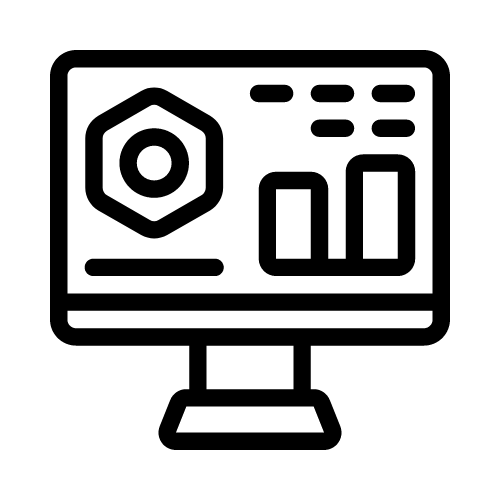
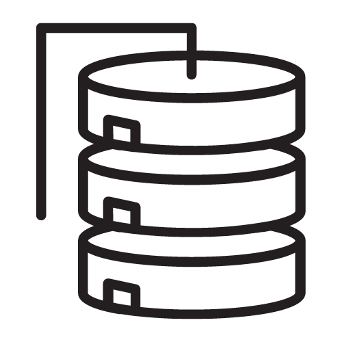
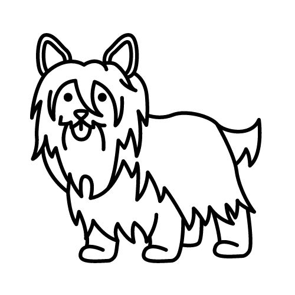

Business Analyst
As of November 2022, I have transitioned into the role of a Business Analyst
for General Motors within the Customer Care & Aftersales (CCA) organization in
the company. The nature of my work focuses on the Supply Chain, Warehousing, and Logistics (SCWL)
space of the organization. As a Business Analyst, my goal is to gather and document clear requirements
for existing or new applications by communicating with all stakeholders ranging across business and software
development teams.

Software Developer
From June 2020 to November 2022, I had worked at General Motors within the
Customer Care & Aftersales (CCA) organization in the company as a Software Developer. In those
2.5 years, I have developed and supported applications that involve demand forecasting and finance
for the the the Supply Chain, Logistics, and Warehousing (SCWL) space of the organization. During my time in
the role of a Software Developer the areas that I gained experience in were that of production support, on-call support,
maintaining databases, and working to develop batch processes.

M.S. in Software Development
I will graduate from Boston University - Metropolitan College with a Master of Science in
Software Development and Certficicate in Web Application Development in May of 2023. The reason
that I pursued this program was to gain new software knowledge, become a better programmer, and
strengthen the current skills that I currently have to become more well-rounded as someone who has
a career in technology.
B.S. in Business Data Analytics &
B.S. in Marketing (Digital and Integrated Marketing Communications)
I attended Arizona State University - W.P. Carey School of Business for my undergraduate programs
where I graduated in May 2020 with a Bachelor of Science in Business Data Analytics and a Bachelor of Science
in Marketing (Digital and Integrated Marketing Communications). During my time at Arizona State University
I was heavily involved in a student organization called Department of Information Systems Club (DISC) where I
had the honor to have a leadership position, attended community outreach events, and had the opportunity to network frequently.
2nd Place in Graphics for Alexion Analytics Challenge (2019)
While at Arizona State University, I had the chance to compete in a national data analytics
competition against other universities through the Department of Information Systems Club (DISC).
Myself, along with two other classmates, competed in the Alexion Analytics Challenge where we had to find
insights into the growing eSports market for NBCUniversal. There were 42 national teams with the top 10 being
selected to present their submission at the AIS Student Chapter Leadership Conference hosted by Temple University.
Based on my team's findings and presentation we ended up placing 2nd Place in Graphics for the competition.